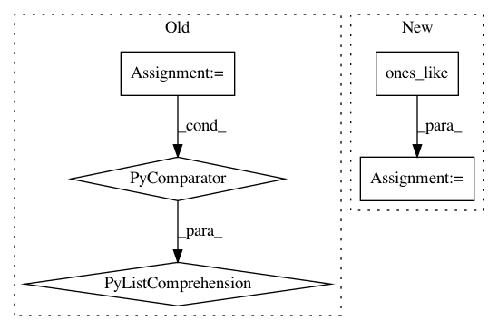

6bf3f51cd0a312da842157665663c2dad9983248,tensorflow_ranking/python/losses_impl.py,ClickEMLoss,_compute_latent_prob,#ClickEMLoss#Any#Any#Any#,914
Before Change
with tf.compat.v1.name_scope(name="compute_latent_prob"):
exam_prob = tf.math.sigmoid(tf.cast(exam_logits, tf.float32))
rel_prob = tf.math.sigmoid(tf.cast(rel_logits, tf.float32))
is_clicked = tf.greater_equal(tf.cast(clicks, tf.float32), 1.0)
prob_non_clicks = 1 - exam_prob * rel_prob + 1e-6
exam_prob_given_non_clicks = exam_prob * (1 - rel_prob) / prob_non_clicks
rel_prob_given_non_clicks = (1 - exam_prob) * rel_prob / prob_non_clicks
exam_prob_given_non_clicks, rel_prob_given_non_clicks = [
tf.stop_gradient(
tf.compat.v1.where(is_clicked, tf.ones_like(prob), prob))
for prob in [exam_prob_given_non_clicks, rel_prob_given_non_clicks]
]
return exam_prob_given_non_clicks, rel_prob_given_non_clicks
def compute_unreduced_loss(self, labels, logits):
Computes the loss for each element.
After Change
exam_prob_posterior = tf.compat.v1.where(
is_clicked, tf.ones_like(exam_logits_posterior),
tf.sigmoid(exam_logits_posterior))
rel_prob_posterior = tf.compat.v1.where(
is_clicked, tf.ones_like(rel_logits_posterior),
tf.sigmoid(rel_logits_posterior))
return tf.stop_gradient(exam_prob_posterior), tf.stop_gradient(
rel_prob_posterior)
def compute_unreduced_loss(self, labels, logits):
In pattern: SUPERPATTERN
Frequency: 4
Non-data size: 5
Instances
Project Name: tensorflow/ranking
Commit Name: 6bf3f51cd0a312da842157665663c2dad9983248
Time: 2021-01-29
Author: xuanhui@google.com
File Name: tensorflow_ranking/python/losses_impl.py
Class Name: ClickEMLoss
Method Name: _compute_latent_prob
Project Name: IBM/adversarial-robustness-toolbox
Commit Name: 5985d16cc0593601ff04a3bedac17b5e3c3b1b7e
Time: 2020-07-04
Author: kz.takemoto@gmail.com
File Name: utils/resources/create_inverse_gan_models.py
Class Name:
Method Name: build_gan_graph
Project Name: SheffieldML/GPy
Commit Name: 11ee480cbf300ae597896ff60a60deef1ba8ed75
Time: 2013-10-28
Author: alan.daniel.saul@gmail.com
File Name: GPy/likelihoods/noise_models/bernoulli_noise.py
Class Name: Bernoulli
Method Name: samples
Project Name: SheffieldML/GPy
Commit Name: 11ee480cbf300ae597896ff60a60deef1ba8ed75
Time: 2013-10-28
Author: alan.daniel.saul@gmail.com
File Name: GPy/likelihoods/noise_models/student_t_noise.py
Class Name: StudentT
Method Name: samples